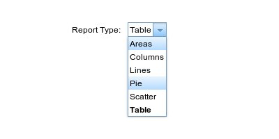

Report Design
Design your own report by selecting a mapping from the list of created mappings. The mapping list shows the
mappings created with the mapping page. Once a mapping is selected, the design tab will be prepopulated with
the list of Dimensions and Measures. These dimensions and measures are the aliases you named on the mapping
page. All numeric alias types will be measures, and non numeric ones will be dimensions. You can drag these
aliases to X-Axis and Y-Axis to define your report. In the filter tab, you can define the conditions for
choosing the data to show up on the report. You can define rowkey and column conditions, greater than, less
than, equals, substring, pattern matches etc using the filters.
Steps to Design Reports
Step 1: Define Report name and select mapping.

Step 2: Select Design tab.
Step 3: Select report type.

Step 4: Drag Alias's from Dimension and Measure list to X-Axis and Y-Axis pane to define your
report.
Step 5: Select filter tab.
Step 6: Define filters for your report by selecting the alias on which you want to apply filter.
Then select filterType and define the value. If you do not provide a value, you can specify one
at run time of the report.
Now you are ready to save or preview your report.